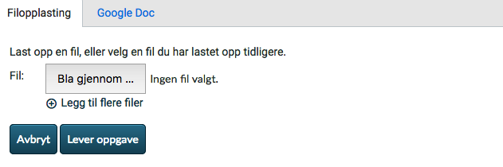
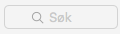
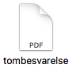
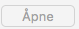
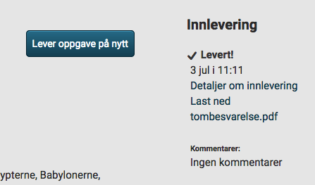

import sys import os cwd = os.getcwd() sys.path.append(cwd) from mmoocutility import * try: print "===" print "TC11" print "Complete 1.1.3.b." print "Logged into Canvas as test user." firefox = App.open("Firefox") #wheel(Location(Location(1058, 948)), WHEEL_DOWN , 100) type(Key.UP, KeyModifier.CMD) #Click 1.1.3.b. click(Location(424, 733)) MMOOCWAIT() #Click "Lever oppgave" click(Location(1180, 320)) MMOOCWAIT() #We have removed the comment field, so check that it is not there. assert exists() #Click "Bla gjennom..." click(Location(719, 991)) MMOOCWAIT() click() MMOOCWAIT() paste("tombesvarelse.pdf") MMOOCWAIT() click() MMOOCWAIT() click() MMOOCWAIT() #Click "Lever oppgave" click() MMOOCWAIT() assert exists() MMOOCPASSED() except: MMOOCFAILED() raise